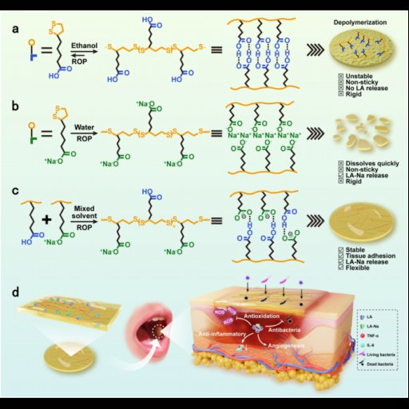

Instructions: Click on any patch to see all three analyses side-by-side.
Grid: 24×24 patches (576 total)
Light green (1.5-1.8×): Maybe interpretable | Dark green (≥1.8×): Likely interpretable
Tip: Use the "Hide Grid" button to remove overlays. Use layer dropdown to switch layers. Patch selection persists!
Click on a patch to see results
🔍 Nearest Neighbors
Select a patch
💭 Logit Lens
Select a patch
📝 Contextual NN
Select a patch